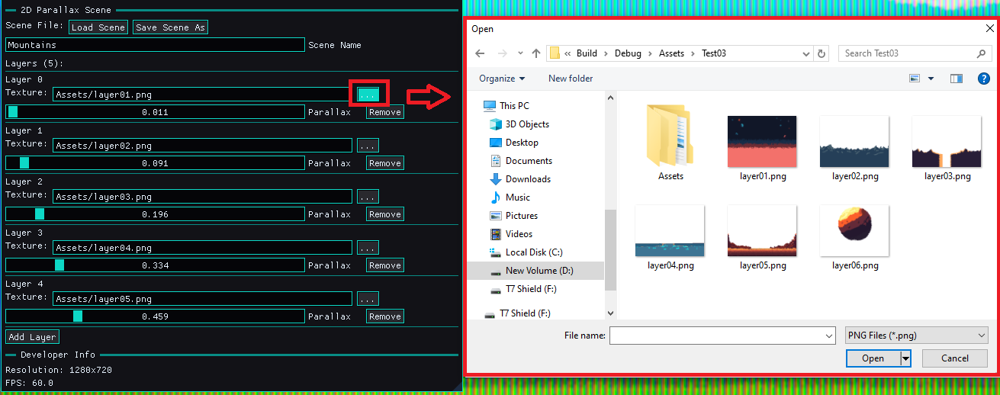

Part I — Laying the Foundations of the RetroEngine Editor
In the last few weeks, RetroEngine evolved from a rendering sandbox into the early shape of a real engine. The biggest leap: the arrival of the first proper editor. Powered by the ImGui docking branch, the editor now lives directly inside RetroEngine’s runtime, giving me live, real-time control over content, scenes, and CRT parameters.
What began as a debug pane is becoming a full authoring environment. Windows can be rearranged, docked, floating, or snapped into custom layouts, and every control reflects the engine’s state instantly. No rebuilding. No restarts. No text file hacks.

Part II — Scene Editing Comes Alive
The parallax system introduced last log has now been fully exposed through the editor. Instead of hard-coded layers, RetroEngine now supports:
- Renaming scenes (UTF-8 aware)
- Adding and removing layers on the fly
- Editing parallax ratios with instant GPU updates
- Real-time scene reloading without any Apply button
- A fully working JSON-based save/load pipeline
Clicking, dragging, or typing in a field updates the scene immediately and the renderer rebuilds textures, descriptor heaps, and GPU bindings in real time. The editor isn’t just reflecting the engine anymore; it’s driving it.
This makes RetroEngine feel dramatically different. I'm shaping a scene, adjusting it, and watching the layers glide in the CRT pipeline as I tweak them.
Part III — The New Texture Import Pipeline
One of the biggest technical challenges was asset handling. Debug builds, release builds, absolute paths, missing folders, WIC decoding failures exposed every fragile assumption. The solution was to build a proper asset pipeline.
RetroEngine now supports a safe, predictable import flow:
- Select any PNG on your machine
- The editor validates the file and copies it into an
Assets/Imported/directory - Both Debug and Release builds auto-create this folder if needed
- Relative paths are generated automatically for JSON scenes
- The editor reloads the scene instantly after import
This was a foundational fix. Texture loading is now unbreakable, predictable, and fully decoupled from your machine’s file structure.

Part IV — JSON Scenes That Actually Work
The original key-value format for parallax scenes has now been replaced with a clean, structured JSON layout. Saving and loading scenes works reliably, no silent failure, no path confusion, no formatting quirks.
Every scene stores:
- Scene name
- Layer count
- Texture paths (relative)
- Parallax values
{
"SceneName": "Mountains",
"Layers": [
{ "Texture": "Assets/Imported/layer01.png", "Parallax": 0.10 },
{ "Texture": "Assets/Imported/layer02.png", "Parallax": 0.30 }
]
}
RetroEngine now boots from a JSON file, reloads scenes from it, and allows you to save new ones directly from the editor. This is the backbone for future level authoring tools.
Part V — Stability, Reliability, and the Dirty Work
Several deep engine issues surfaced while building the editor — and solving them made the engine far more robust:
- A persistent WIC decoding error caused by invalid absolute paths
- Descriptor heaps being destroyed while command lists still referenced them
- Debug/Release builds resolving Assets differently
- Silent scene-saving failures caused by path formatting differences
- GPU sync issues during live scene updates
All of these are now fixed, replaced with predictable behavior and detailed logging. The engine finally feels stable — something you can build real tools and workflows on top of.
Closing Thoughts
This dev log marks a clear turning point. RetroEngine now has a working editor, a functioning import pipeline, a robust asset system, JSON scene support, and fully interactive parallax tools, all woven directly into the CRT simulation workflow.
The engine is no longer just drawing scenes. It’s authoring them.
Next up: The start of a full scene graph and tileset editor... the features that will turn this editor into a proper retro game toolkit.